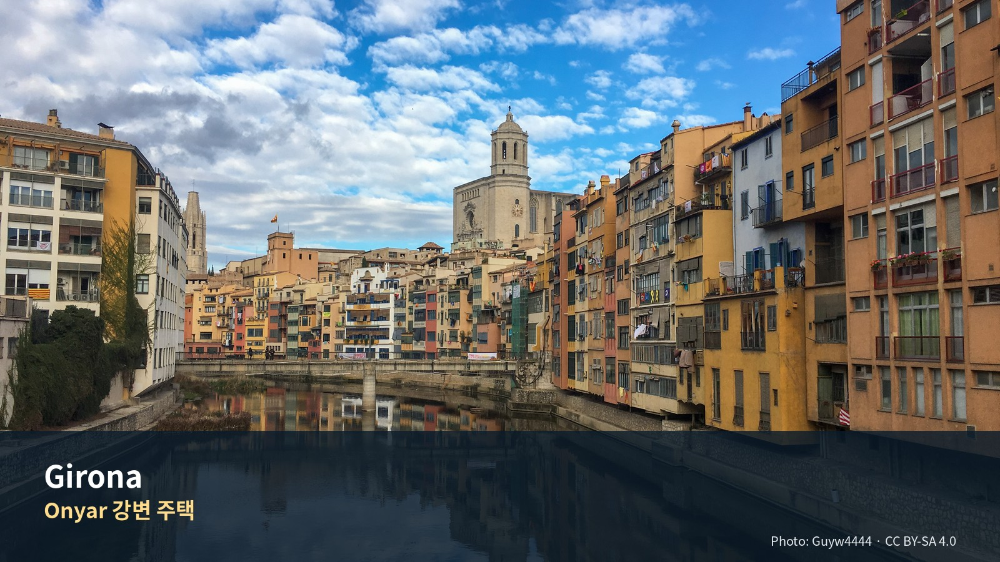

지로나·콜리우르·바이스 엠포르다
중세도시의 저녁, 프랑스 카탈루냐 해안마을, 석조마을과 코스타브라바
- 문서 버전: v1.1
- 상태: 일정 확정·1차 공식자료 검증 완료
- 체류기간: 2026-09-01 – 2026-09-04, 3박
- 여행자: Jason·Julia
- 차량: 바르셀로나에서 인수한 렌터카 사용
- 다음 거점: 니스
- 조사 기준일: 2026-07-30
- Julia의 수영: 선택 일정이며 숙소 선택조건이 아님
일자
주제
지역소개이 지역을 어떻게 읽을 것인가여행정보무엇을 보고 어디를 갈 것인가먹거리무엇을 먹고 어디서 살 것인가교통어떻게 움직일 것인가숙박어디에 묵을 것인가예약무엇을 미리 잠글 것인가경비얼마가 드는가여행팁현장에서 무엇을 조정할 것인가부록무엇을 근거로 썼는가
일정 한눈에
Quick Reference
| 항목 | 확정 내용 |
|---|---|
| 여행 성격 | 지로나는 저녁·반나절, 낮에는 주변마을과 콜리우르 |
| 숙박 | 지로나 3박 |
| 기본 숙소 생활권 | 기차역–Plaça Catalunya–Gran Via Jaume I 사이 |
| Day 1 | 지로나 대성당·성벽·Onyar 강변 |
| Day 2 | 콜리우르 시장·왕궁·야수파 산책 → 페랄라다 |
| Day 3 | Pals → Peratallada → Calella de Palafrugell |
| Day 4 | 지로나 출발 → 니스 이동 |
| 필수 예약 | 페랄라다 17:30 박물관 투어, 필요 시 저녁식당 |
| 선택 예약 | 지로나 대성당 통합권, 콜리우르 왕궁 |
| 하루 피로도 | Day 1: 4 / Day 2: 4 / Day 3: 4 / Day 4: 이동방식에 따라 4–5 |
| 핵심 위험 | 차량 주차, 국경 통과, 콜리우르 혼잡, 해안마을 주차 |
| 우천 대체 | 지로나 실내박물관·페랄라다 박물관·콜리우르 왕궁 중심 |
전체 일정표
| 날짜 | 요일 | 테마 | 핵심 동선 |
|---|---|---|---|
| 9/1 | 화 | 지로나 도착과 반나절 핵심 | 시체스 → 지로나 → 대성당 → 성벽 → Onyar 강변 |
| 9/2 | 수 | 프랑스 카탈루냐 | 지로나 → 콜리우르 → 페랄라다 → 지로나 |
| 9/3 | 목 | 중세마을과 해안마을 | 지로나 → Pals → Peratallada → Calella de Palafrugell → 지로나 |
| 9/4 | 금 | 니스 이동 | 렌터카·철도 구조에 따라 별도 확정 |
동선 도식
Day 1
Sitges
↓
Girona Cathedral → City Walls → Jewish Quarter → Onyar River
Day 2
Girona
↓ 약 1시간 10분
Collioure
↓ 약 1시간 5분
Peralada
↓ 약 40분
Girona
Day 3
Girona
↓ 약 40–45분
Pals
↓ 약 15분
Peratallada
↓ 약 25–30분
Calella de Palafrugell
↓ 약 50–55분
Girona
실제 주행시간은 교통·주차·국경 상황을 포함해 10–20분 여유를 둔다.
이 일정이 Jason·Julia에게 맞는 이유
지로나 시내의 핵심은 대성당, 성벽, 유대인 지구, Onyar 강변에 밀집되어 있어 도착일 저녁과 매일의 저녁 산책으로 상당 부분을 볼 수 있다. 낮 시간을 주변지역에 배분하면 도시 하나를 깊게 보면서도 프랑스 카탈루냐와 코스타브라바의 대표 경관을 경험할 수 있다.
- Jason: 중세도시 구조, 야수파 미술, 석조마을, 해안 스케치
- Julia: 마을 산책, 시장, 해안마을과 카페
- 공통: 하루에 성격이 다른 2–3개 장소만 배치
- 운전: Day 2·3 모두 지로나에 저녁 전에 복귀
- 피로 관리: 장거리 트레킹·박물관 과다 방문 제외